You need to completely revise your understanding of AI tools if it’s mostly based on:
Using AI tools 4+ months ago
Using the official company Copilot
Using free services
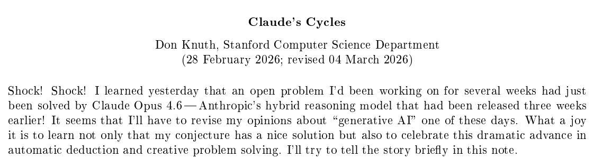
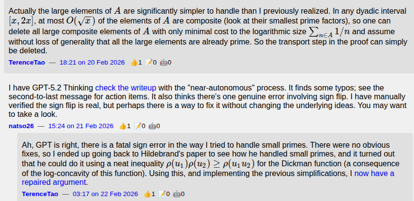
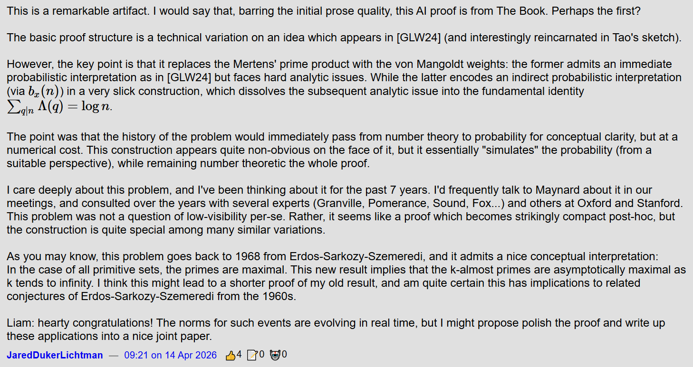
AI chatbots were getting useful in getting started and getting unstuck
AI assistants (code completion) were gaining traction
Hallucinations were still quite a big problem
I started hearing more about AI agents, especially Claude Code (released Feb 2025)
I got a paid Claude account five months ago to try it
It was immediately useful
“What am I bad at?”
Modern frontend stuff
Gnarly PHP embedded in eg. Wordpress
“It knows almost everything, and it can google”
Around December, there was a dramatic improvement.
“Like many others I rapidly went from about 80% manual + autocomplete coding and 20% agents in November, to 80% agent coding and 20% edits + touchups in December. I really am mostly programming in English now”
- Andrej Karpathy, Dec 2025
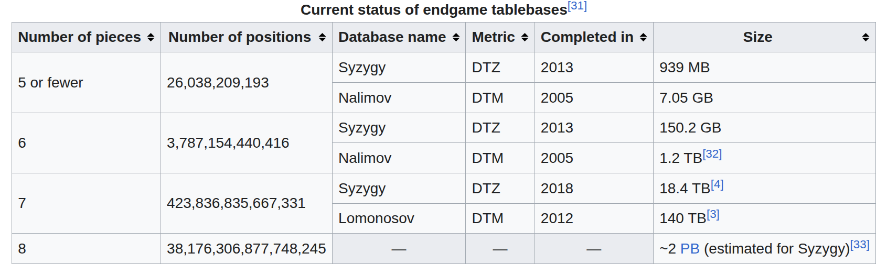
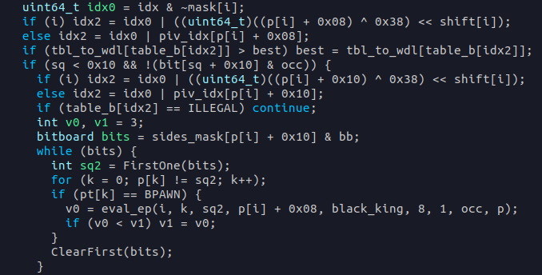
Introduce project to Claude Code, instruct it to read the codebase and write a summary in CLAUDE.md
Ask it to identify the locations in the code we need to modify
Instruct about how to validate
Opus burned through the tokens in my “Pro” level account very fast
I had to either work in short bursts and wait for tokens to refresh, or pay for more token budget
I ended up spending 20 euros out of momentum
I wanted a browsing interface to the tablebases
Claude developed a Python implementation that tries to load each position into a Python object
It would have needed many terabytes of memory even if each position were 1 byte, but it’s Python, they’re more like 1000 bytes
Replacing a single-customer on-server Python authorization service with a from-scratch Node.js server with multiple customers
Writing ambitious new features for a service that touches 5 codebases
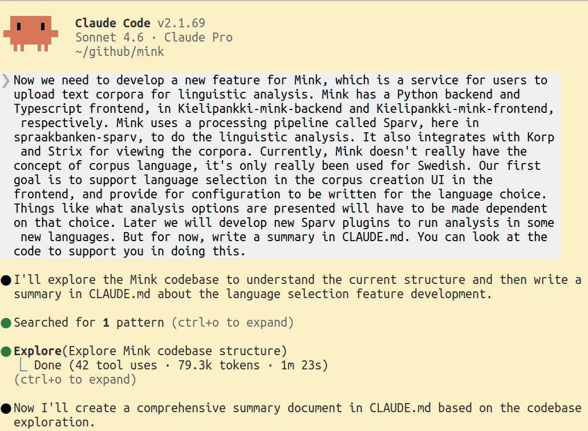
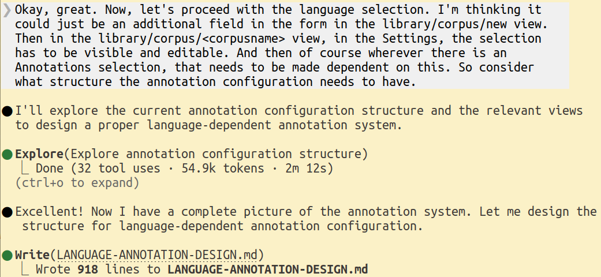
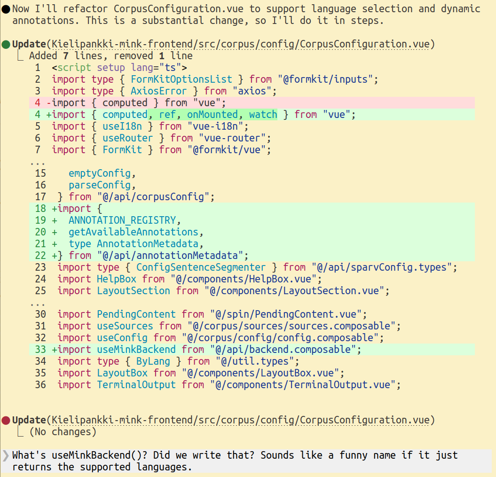
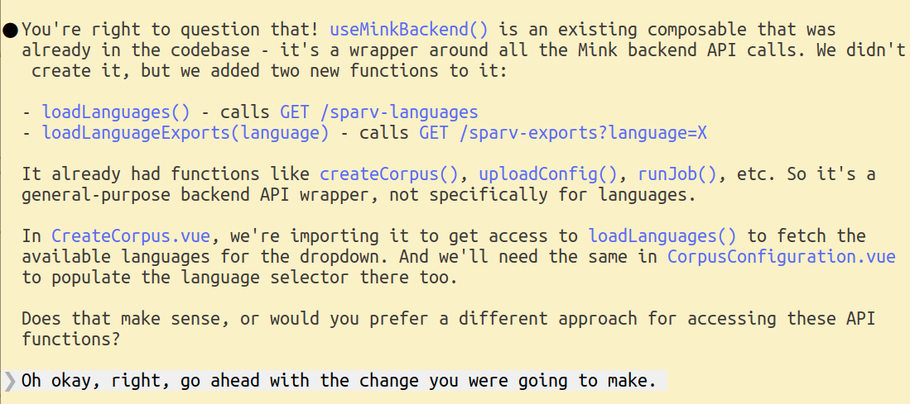
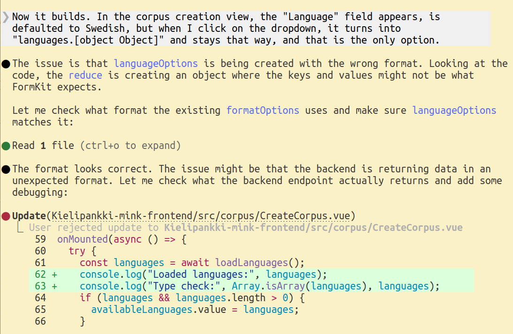
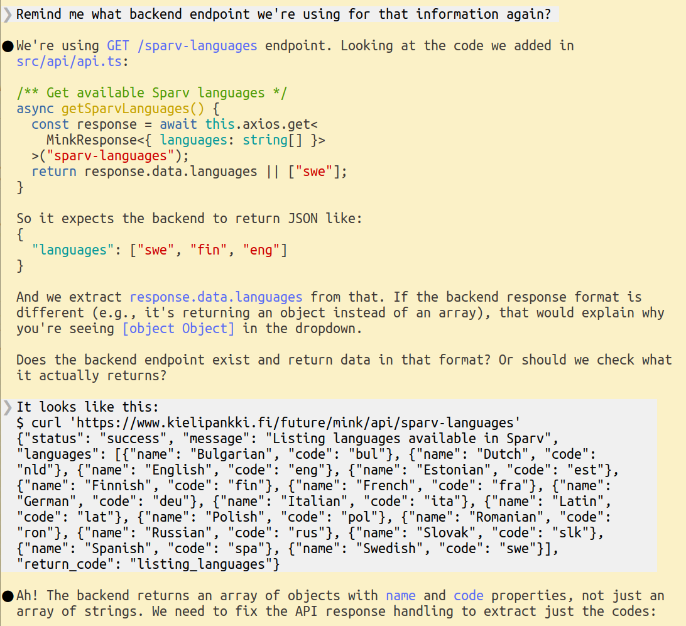
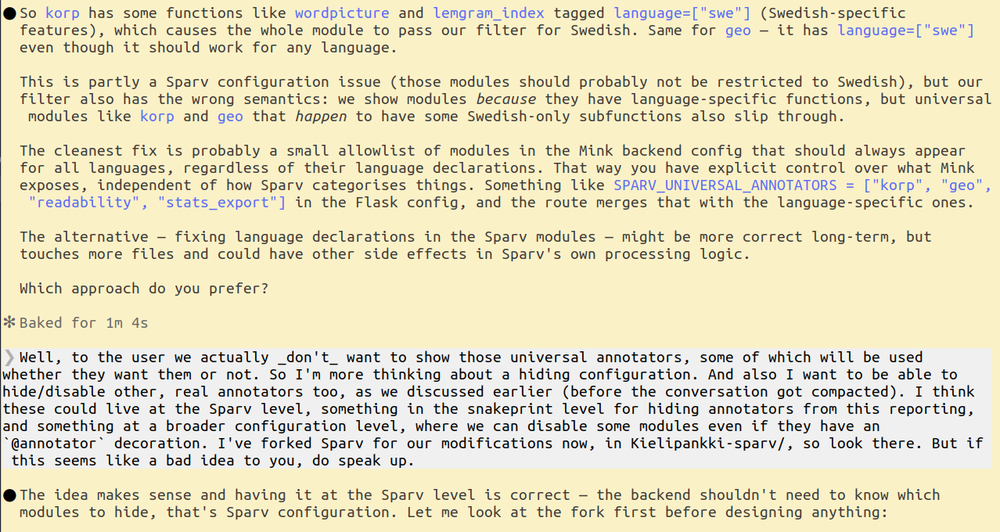
Level 1: Pasting from chatbot window
Level 2: Autocomplete in IDE
Level 3: Interacting with agent in a feedback loop
Level 4: Agent in a harness
A small team can now undertake big projects, or fearlessly try big changes
Experimenting is much cheaper
A really motivated individual can do a lot
Security
Skill atrophy / loss of understanding
Context collapse / compaction
Integration with MCP servers (Model Context Protocol), giving it access to various data stores
General data access using the file system
Hooks, integrations (GitHub, messaging services, Excel, Powerpoint), … (OpenClaw)
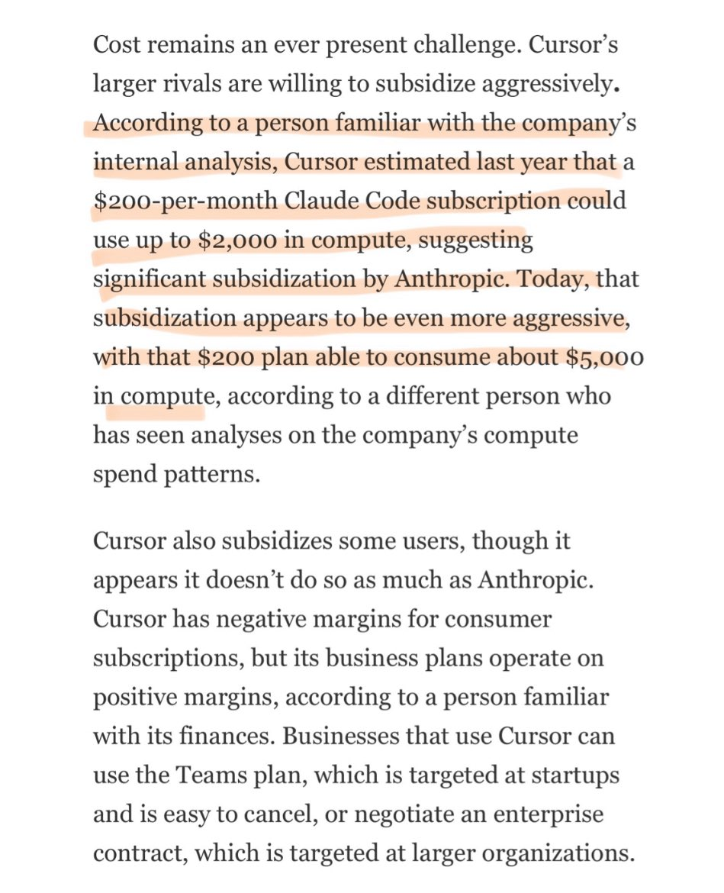
“There’s a new programmable layer of abstraction to master […]
agents, subagents, their prompts, contexts, memory, modes, permissions,
tools, plugins, skills, hooks, MCP, LSP, slash commands, workflows, IDE
integrations, and a need to build an all-encompassing mental model for
strengths and pitfalls of fundamentally stochastic, fallible,
unintelligible and changing entities suddenly intermingled with what
used to be good old fashioned engineering.”
- Andrej Karpathy, Dec
2025
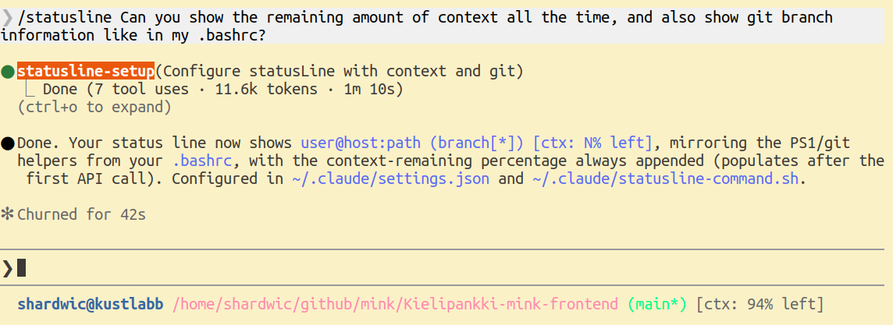
I paid out of pocket at first, now I’ve made my first expense claim
There is an project underway to take Claude Code into use officially
Expected completion in June, compliance & risk assessment ongoing
“Per seat” team plan licenses for coders, expensed to cost objects
Recommendation to run inside a container or VM
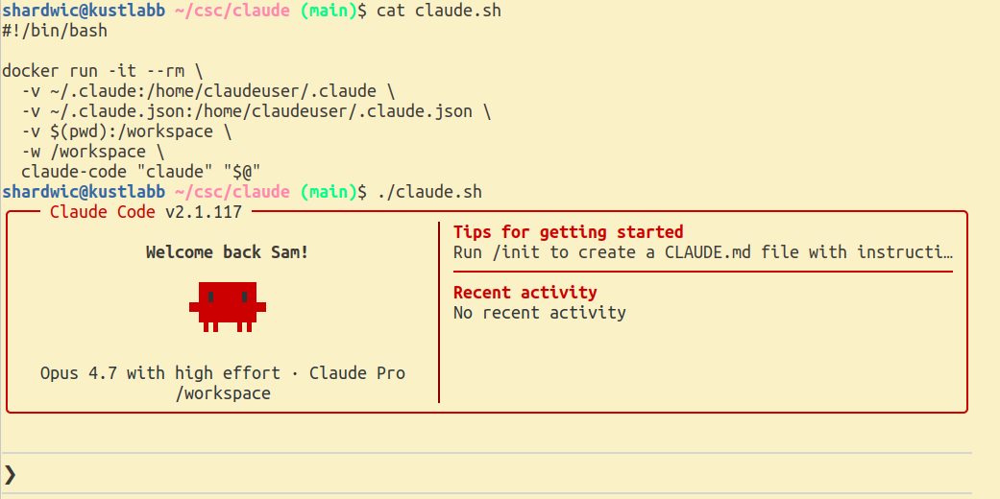
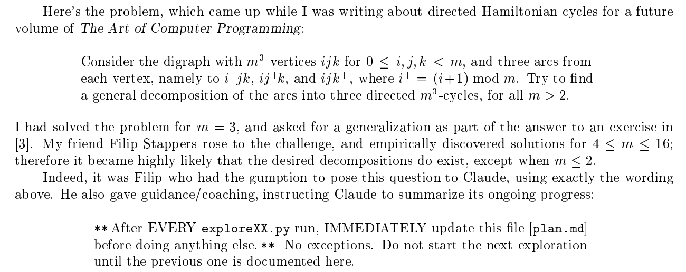
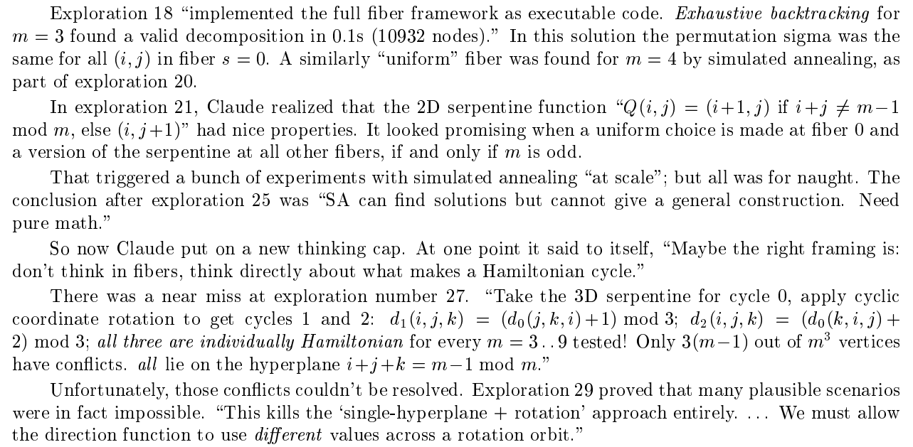
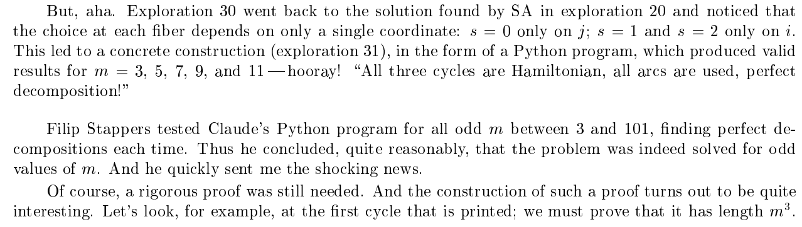
Don Knuth: Richard Morris / https://www.red-gate.com/simple-talk/opinion/geek-of-the-week/donald-knuth-geek-of-the-week/
Terence Tao: David Esquivel/UCLA / https://newsroom.ucla.edu/stories/terence-tao-science-stability-future-of-math-washington-post
Forbes article: https://www.forbes.com/sites/annatong/2026/03/05/cursor-goes-to-war-for-ai-coding-dominance/